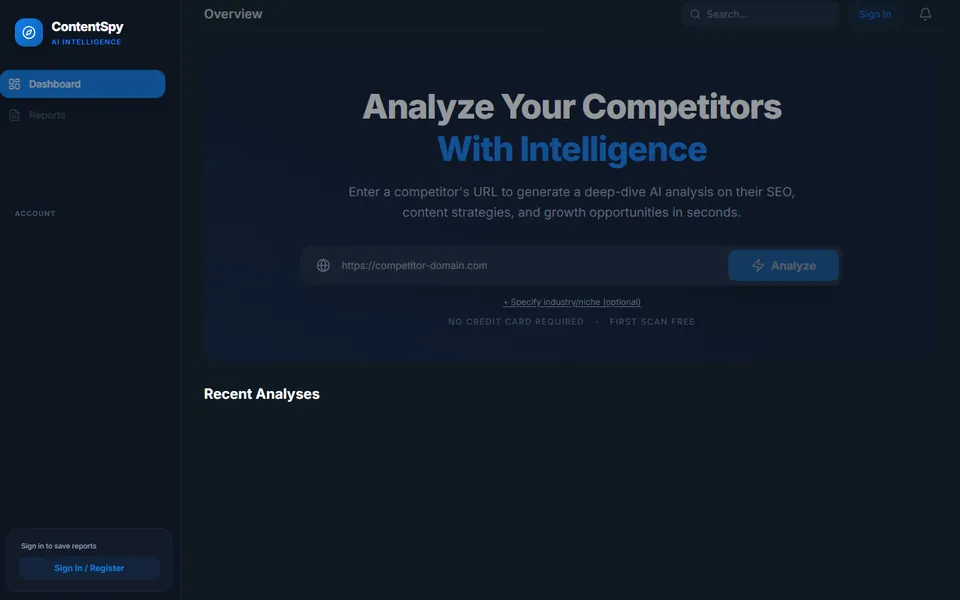
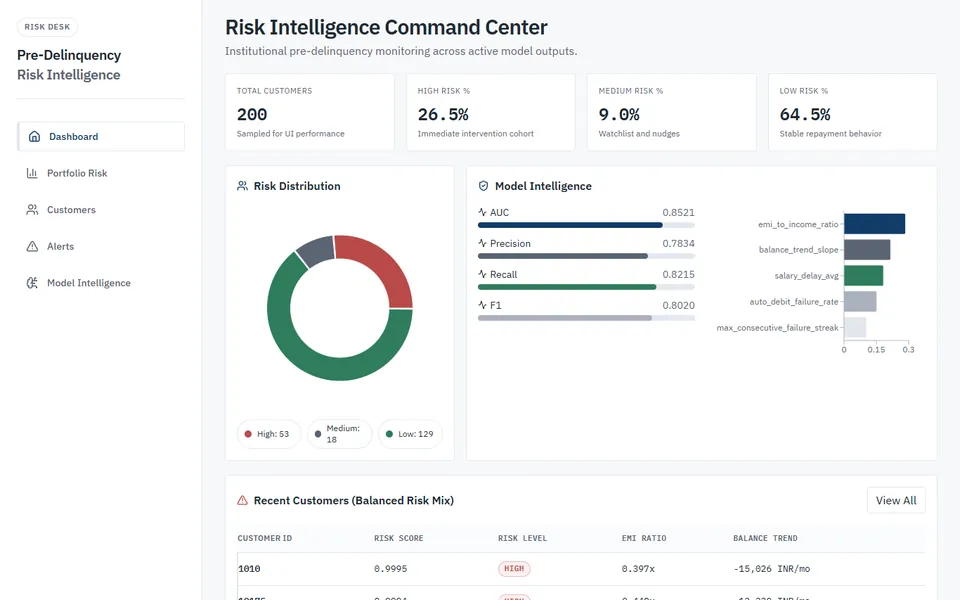
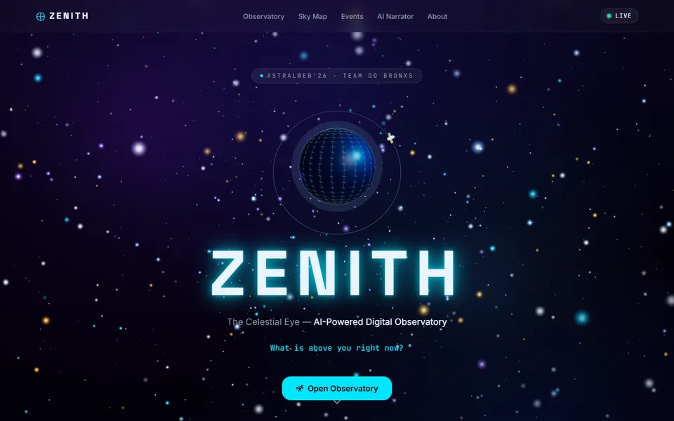
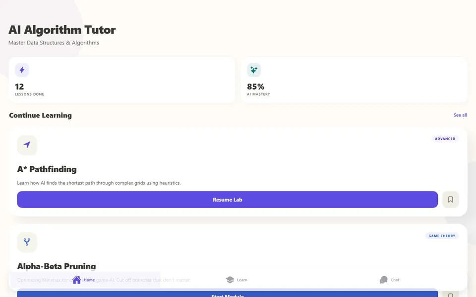
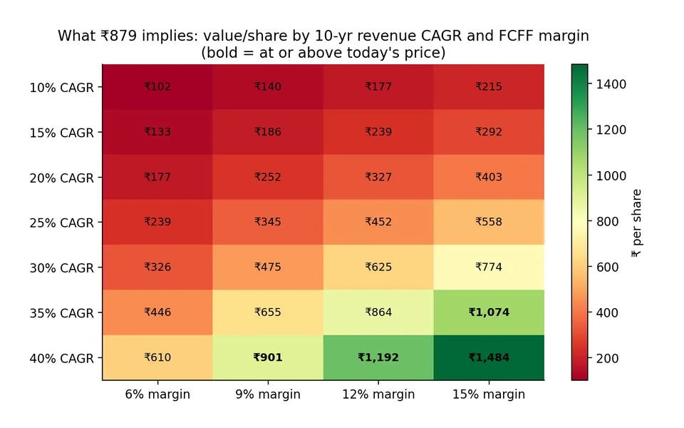

Full-stack & AI developer
I build AI-powered web apps, from the LLM workflow to the product around it.
Next.js, React, Node.js and FastAPI on the product side; LLM integration, tool-calling and RAG on the AI side. B.Tech ECE student at SRM University and Software Development Intern at ASA Industries.
About
I'm Utkarsh, an Electronics and Communication Engineering student at SRM University, specialising in VLSI and Digital Technology. I like building things end to end: the interface, the API, the data model and, more and more, the AI layer that ties them together.
At ASA Industries, an electric motor manufacturer, I replaced a 141-column Excel workflow with a production ERP and built a KPI system that computes department metrics straight from company data. That work taught me to check numbers before trusting them, a habit I bring to every project.
Right now I'm focused on agentic AI: LLMs that call tools, search the web and act on code. I'm looking for internships where I can build AI products that real people use.
Skills
AI & agentic AI
- LLM integration: OpenAI API, Google Gemini, local models with Ollama, Puter.js multi-model access ContentSpy, Mood DJ, AI Algorithm Tutor
- Tool-using agents: LLM calls with web search, model fallback chains, structured JSON output with repair ContentSpy
- Code agents: a GitHub App that parses CI failures, proposes fixes and opens pull requests Devoploy (in progress)
- RAG: OpenAI embeddings stored in Postgres with pgvector, retrieved for grounded answers Devoploy
- Machine learning: scikit-learn, XGBoost, feature engineering, MLflow tracking Pre-Delinquency Risk
Languages
- TypeScript
- JavaScript
- Python
- Java
- SQL
- C++ (Arduino)
- HTML/CSS
Frontend
- React
- Next.js
- React Native (Expo)
- Tailwind CSS
- Framer Motion
- shadcn/ui
- Recharts
- Vite
Backend
- Node.js
- Express
- FastAPI
- Next.js API routes
- Prisma
- BullMQ
- REST APIs
Data
- PostgreSQL
- MongoDB
- MySQL
- Redis
- pandas
- NumPy
- Excel modelling
Tools & cloud
- Git & GitHub
- GitHub Actions
- Docker
- Vercel
- Render
- Maven
IoT & hardware
- ESP8266 (NodeMCU)
- DHT sensors
- PlatformIO
- Arduino
Projects


In progress
Devoploy
A GitHub App agent for broken deployments: it clones the repo, parses CI and build failures, proposes a fix with an LLM and opens a pull request. Documentation search uses RAG over OpenAI embeddings in Postgres (pgvector). A worker on BullMQ and Redis runs the jobs.

AI Algorithm Tutor
A React Native app that animates A* pathfinding and alpha-beta pruning step by step, with explanations from a local LLM served by Ollama, so it works offline.

More projects
- Mood DJUpload tracks, describe a mood, get an AI-picked mix. Next.js, Prisma, PostgreSQL, OpenAI
- SwiftReliefDisaster-relief coordination desktop app (hackathon). JavaFX, MySQL
- ESP8266 climate monitorDHT11 temperature and humidity firmware with CI builds. C++, PlatformIO
- Quiz AppTimed multiple-choice quiz with instant feedback. React
Experience
-
May 2026 – Present
Software Development Intern · ASA Industries
Data, ERP & KPI systems · Uttar Pradesh
- Built a production ERP for an electric motor manufacturer, replacing a 141-column Excel workflow across 5 departments (React, Node.js/Express, MongoDB Atlas).
- Audited the legacy workbooks, rebuilt their calculations from raw inputs and reconciled every output; end-to-end tests across 6 modules showed zero inventory reconciliation drift.
- Building a KPI system in Python that computes 83 department KPIs directly from company data, replacing hand-typed scores.
-
Sep 2025 – Nov 2025
Backend Developer Intern · Yuva
- Built and documented REST APIs for e-commerce and blogging systems on Node.js and MySQL; load-tested with JMeter and cut API latency by 30%.
-
Hackathons
5 hackathons, second round in 2
- Project Zenith for ASTRALWEB'26 with Team DO BRONXS; SwiftRelief, where I led backend and database integration.
Contact
Open to internships in AI and full-stack development. The fastest way to reach me is email.